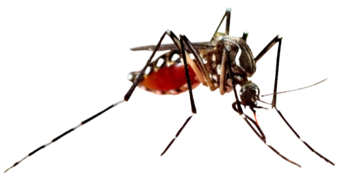

ABORDAGEM CLÍNICA DE ZIKANA ATENÇÃO PRIMÁRIA À SAÚDE
Vigilância da infecção pelo vírus zika: notificação e investigação de casos e óbitos suspeitos/confirmados


ABORDAGEM CLÍNICA DE ZIKANA ATENÇÃO PRIMÁRIA À SAÚDE
Vigilância da infecção pelo vírus zika: notificação e investigação de casos e óbitos suspeitos/confirmados
SOBRE O MATERIAL
UNIDADE
VIGILÂNCIA DA INFECÇÃO PELO VÍRUS ZIKA: NOTIFICAÇÃO E INVESTIGAÇÃO DE CASOS E ÓBITOS SUSPEITOS/CONFIRMADOS
VIGILÂNCIA E NOTIFICAÇÃO
A doença desencadeada pelo vírus zika (ZIKV) é de notificação compulsória desde fevereiro de 2016, momento em que o Brasil passava pela Emergência em Saúde Pública por ZIKV.
Quando a doença aguda é detectada em gestante, a notificação deverá ser realizada imediatamente, isto é, em até 24 horas, às secretarias municipais e estaduais de Saúde, e quando há óbito com suspeita de doença pelo ZIKV, a notificação é realizada em até 24 horas às secretarias municipais e estaduais de Saúde e ao Ministério da Saúde
Já os casos suspeitos e/ou confirmados (não as gestantes) devem ser obrigatoriamente notificado ao Serviço de Vigilância Epidemiológica da Secretaria Municipal de Saúde de forma semanal
.svg)
E por que notificar é tão importante?
A vigilância epidemiológica (VE) fornece subsídios para a execução de ações de controle de doenças e agravos (informação para a ação); para isso, tornam-se necessárias a disponibilização e a análise de informações atualizadas sobre a sua ocorrência. A principal fonte dessas informações a serem analisadas pela VE é a notificação de agravos e doenças realizada pelos profissionais de saúde em tempo oportuno. Assim, os principais objetivos da notificação envolvemA Síndrome Congênita Associada à infecção pelo vírus zika (SCZ), compreende um conjunto de anomalias congênitas que podem incluir alterações visuais, auditivas e neuropsicomotoras que ocorrem em indivíduos (embriões ou fetos) expostos à infecção pelo ZIKV durante a gestação.
Como notificar casos suspeitos/confirmados para ZIKV
As notificações de casos suspeitos de infecção pelo ZIKV devem ser registradas na Ficha de Notificação Individual/Conclusão e inseridas no Sistema de Informação de Agravos de Notificação (Sinan Net)
Já os óbitos suspeitos pela infecção do ZIKV devem ser comunicados para todas as esferas de gestão do Sistema Único de Saúde (SUS), no canal de comunicação mais rápido que esteja disponível, respeitando-se os fluxos pactuados entre as secretarias estaduais e municipais de saúde e o Ministério da Saúde.
Casos suspeitos ou confirmados para síndrome congênita do zika (SCZ)
A notificação dos casos suspeitos para SCZ (feto, recém-nascido, criança, óbito fetal, aborto ou natimorto) deve ser feita por meio do formulário eletrônico do Registro de Eventos em Saúde Pública (RESP) - Microcefalia. Destaca-se que a notificação da ocorrência de microcefalia no RESP é realizada por unidades de saúde, ambulatórios especializados, hospitais e maternidades, consultórios ou clínicas da rede pública e privada. Para notificar, não é necessário possuir cadastro no RESP; a notificação pode ser realizada pelo primeiro estabelecimento de saúde que identificar um caso suspeito, provável ou confirmado, podendo ocorrer no momento do pré-natal, nascimento ou puericultura. Sugere-se que o estabelecimento de saúde que fizer a notificação no RESP sinalize na Caderneta da Gestante ou da Criança que a notificação foi realizada.

Fique atento
Atenção
É importante salientar ainda que a notificação do caso suspeito de microcefalia no RESP não exclui a necessidade de se notificar no Sistema de Informação de Nascidos Vivos (Sinasc). Este sistema permite o registro de informações dos nascidos vivos (NV), gestantes e do parto.
Investigação de casos suspeitos/confirmados de ZIKV
Na investigação dos casos de ZIKV, é muito importante que haja um roteiro de perguntas a ser seguido, de maneira a otimizar o tempo de investigação para um caso suspeito de ZIKV. Nesse roteiro, sugerem-se alguns tópicos listados a seguir
Na investigação de casos de síndrome congênita relacionada ao ZIKV, estes podem ocorrer em:
Investigação de óbitos suspeitos/confirmados de ZIKV
Para os óbitos suspeitos por ZIKV, é necessária a investigação detalhada e oportuna, sendo necessária a confirmação laboratorial. Em localidades que não tenham um instrumento específico de investigação para óbitos suspeitos pelo ZIKV, é recomendada a utilização do protocolo de investigação de óbitos por dengue.
Para a confirmação de óbitos suspeitos por zika, são considerados os seguintes parâmetros, quando realizados os testes específicos para diagnóstico de ZIKV:
A investigação de óbitos suspeitos/confirmados de zika deve ser iniciada imediatamente após a notificação. O município realiza a investigação, podendo ter apoio da regional de saúde.
Também na investigação de óbitos suspeitos/confirmados por ZIKV é importante que o profissional de saúde tenha em mãos algum instrumento de coleta de dados que possa orientar e qualificar a investigação. Comumente, os instrumentos utilizados são padronizados pela VE municipal e estadual e requerem informações como:
Fique atento
Atenção
É importante salientar ainda que a notificação do caso suspeito de microcefalia no RESP não exclui a necessidade de se notificar no Sistema de Informação de Nascidos Vivos (Sinasc). Este sistema permite o registro de informações dos nascidos vivos (NV), gestantes e do parto.
Em diversas localidades, a Vigilância Epidemiológica Hospitalar, por meio dos Núcleos Hospitalares de Epidemiologia -NHEs - e seus profissionais qualificados em âmbito hospitalar, podem auxiliar na notificação de casos e óbitos por ZIKV, na realização da investigação epidemiológica em articulação com a Secretaria Municipal de Saúde (SMS) e com a Secretaria Estadual de Saúde (SES); realizar apoio na investigação de óbitos infantis e fetais ocorridos em ambiente hospitalar por ZIKV.
Clique no cartão para interagir!
Referências
BRASIL. Ministério da Saúde. Protocolo de investigação de óbitos por arbovírus urbanos no Brasil: dengue, chikungunya e zika. 2016. Disponível em: https://central.to.gov.br/download/102525. Acesso em: 25 nov. 2023.
BRASIL. Anexo V da portaria de consolidação GM/MS n. 4, de 28 de setembro de 2017, que dispõe sobre a lista nacional de notificação compulsória de doenças, agravos e
eventos de saúde pública. 2017. Disponível em: https://bvsms.saude.gov.br/bvs/saudelegis/gm/2017/prc0004_03_10_2017.html. Acesso em: 15 nov. 2023.
BRASIL. Ministério da Saúde. Sistema de Informação de Agravos de Notificação – SINAN: Zika Vírus. Atualizado em 01/2019. Disponível em: https://portalsinan.saude.gov.br/zika. Acesso em: 20 dez. 2023.
BRASIL. Ministério da Saúde. Notificação compulsória. Disponível em: https://www.gov.br/saude/pt-br/composicao/svsa/notificacao-compulsoria. 2022a. Acesso em: 10 nov. 2023.
BRASIL. Ministério da Saúde. Rede Nacional de Vigilância, Alerta e Resposta às Emergências em Saúde Pública no âmbito do SUS. Resultados das ações nos anos de 2020 e 2021. 2022b. Disponível em: https://www.gov.br/saude/pt-br/centrais-de-conteudo/publicacoes/svsa/vigilancia/rede-nacional-de-vigilancia-alerta-e-resposta-as-emergencias-em-saude-publica-no-ambito-do-sistema-unico-de-saude-rede-vigiar-sus-resultados-das-acoes-nos-anos-2020-e-2021.pdf/view. Acesso em: 15 nov. 2023.
BRASIL. Ministério da Saúde. RESP-Microcefalia: manual de instruções. 2022c. Disponível em: http://plataforma.saude.gov.br/anomalias-congenitas/resp-microcefalia-manual-instrucoes.pdf. Acesso em: 10 nov. 2023.
BRASIL. Ministério da Saúde. Calendário Básico de Vacinação da Criança. 2023b. Disponível em: http://pni.datasus.gov.br/calendario_vacina_Infantil.asp. Acesso em: 22 out. 2023.
BRASIL. Guia de Vigilância em Saúde. 6. ed. Brasília: Ministério da Saúde, 2023. Disponível em: https://www.gov.br/saude/pt-br/centrais-de-conteudo/publicacoes/svsa/vigilancia/guia-de-vigilancia-em-saude-volume-1-6a-edicao/view. Acesso em: 28 dez. 2023.
PARANÁ. Secretaria de Saúde. Nota técnica n. 16/2021 DAV/Sesa. Assunto: Orientações Integradas de Vigilância e Atenção à Saúde relacionadas à Notificação de Microcefalia no RESP. 2021. Disponível em: https://www.dengue.pr.gov.br/sites/dengue/arquivos_restritos/files/documento/2021-10/notatecnica_no_16-2021_resp_microcefalia.pdf. Acesso em: 10 nov. 2023.